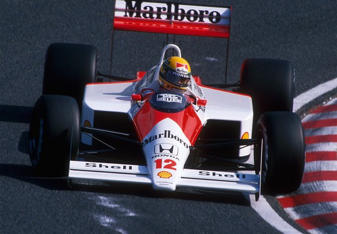

Our models are hand-assembled in our workshops in Northern France. Our experienced craftsmen, passionate about cars, forge and assemble the parts themselves. You can't drive them, but you can admire them, thanks to Petite Engine.
Ours products :

The MP4/4, piloted by Ayrton Senna, is a legendary Formula 1 car renowned for its dominance during the 1988 season. Ayrton Senna's mastery behind the wheel of the MP4/4 propelled him to numerous victories and cemented his status as one of the greatest drivers in F1 history.
The W11, driven by Lewis Hamilton, is a formidable Formula 1 car celebrated for its championship-winning performance during the 2020 season. Lewis Hamilton's exceptional talent combined with the technological prowess of the W11 resulted in a dominant campaign, securing him his seventh world championship title.
The F2003-GA, piloted by Michael Schumacher, is an iconic Formula 1 car revered for its speed and reliability during the 2003 season. The F2003-GA's advanced aerodynamics and powerful V10 engine propelled Schumacher to numerous victories, establishing it as one of the most successful cars in Ferrari's illustrious history.